El Banco Solidario de Ecuador , brindará crédito inmediato y otras facilidades financieras a los pequeños empresarios a través del programa denominado " la chauchera " , una especie de tarjeta de crédito que da valor a las personas " por lo que son y no por lo que tienen ".
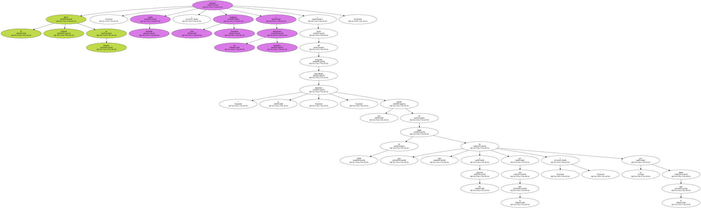Así lo aseguró el presidente ejecutivo del Banco Solidario , Santiago Ribadeneira , quien dijo a EFE que el crédito tiene una base de cien dólares ( equivalente a un salario mínimo vital ) y un máximo de 10.000 dólares , a un interés del 18 por ciento y con un plazo que se acoplará a las necesidades del cliente.

Recordó que en Ecuador hay 500.000 pequeños empresarios , actividad de la que dependen unas seis millones de personas , aproximadamente la mitad de la población de esta nación andina.
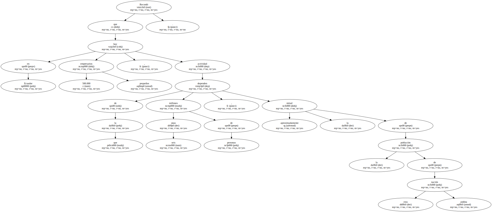Con la " chauchera " , nombre popular con el que se conoce al monedero en algunos sectores de Ecuador , el pequeño empresario podrá adquirir , mediante una línea de crédito directo que otorga el Banco Solidario a través de una cuenta y sobre giro contratado , la materia prima que requiere para su negocio.
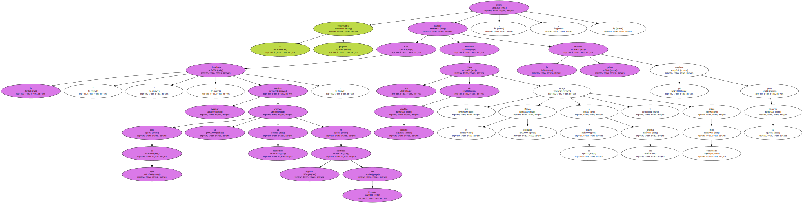Con la nueva tarjeta , el cliente podrá obtener también anticipos en efectivo en las ventanillas de todas las oficinas del Banco Solidario , cuyo capital proviene en un 40 por ciento de la inversión extranjera.
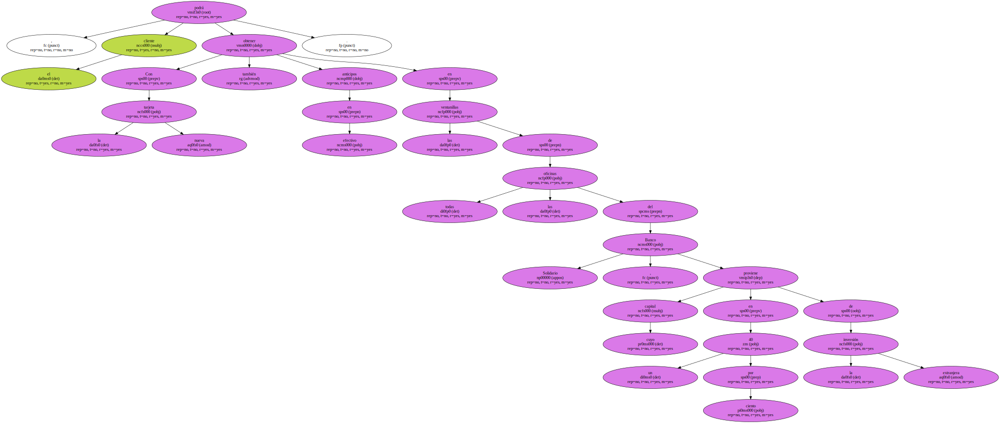En la lista de accionistas figuran la Corporación Andina de Fomento ( CAF ) y el Banco Interamericano de Desarrollo ( BID ) , entre otras entidades financieras , además de inversores locales.
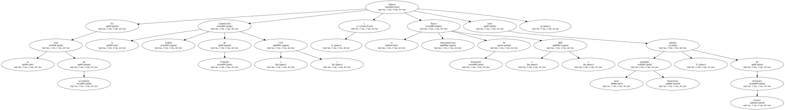Otros objetivos de la " chauchera " son reducir el nivel de intermediación al que está expuesto el pequeño empresario y facilitar uniones con el fin de generar grandes volúmenes de demanda para que consigan productos a precio de mayoristas.
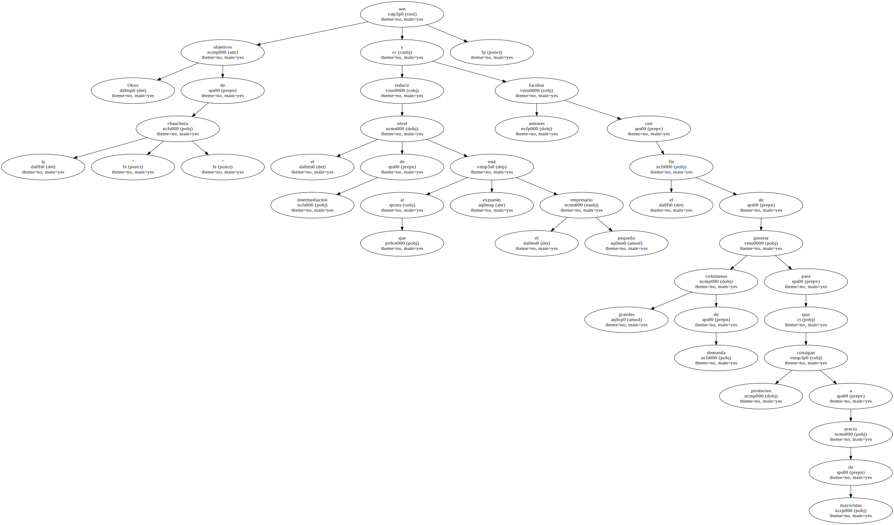Ribadeneira aseguró que el riesgo financiero de creer en las personas " por lo que son y no por lo que tienen " es tan bajo que se ha reflejado en que su banco , que da servicios a pequeños empresarios , tiene una cartera vencida del 1 por ciento.
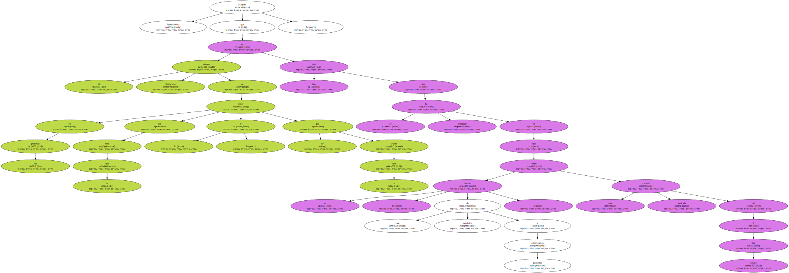Los préstamos se otorgan a partir de un análisis que mide la capacidad de pago y el carácter del solicitante.
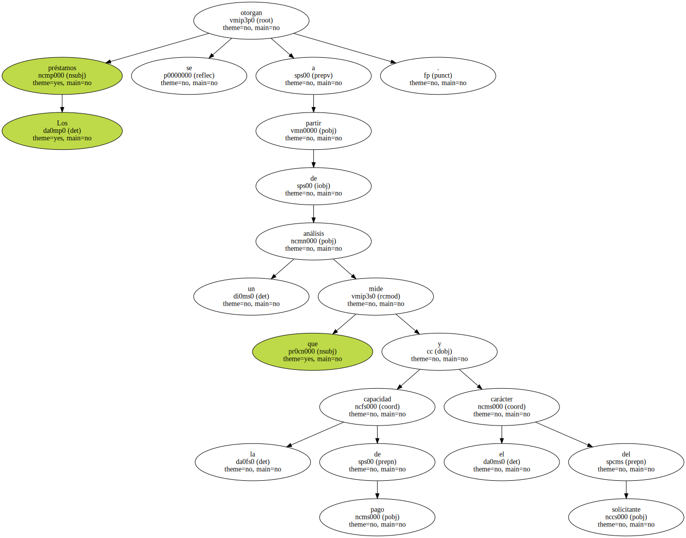El presidente ejecutivo explicó que representantes del banco irán al campo y preguntarán al tendero y arrendatario cómo paga las cuentas el solicitante del préstamo y " al cura ( sacerdote ) cómo se comporta ".
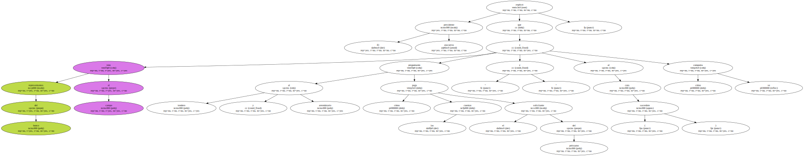" Con esos elementos se califica el 70 por ciento del cliente : voluntad de pago y seriedad de la persona en su entorno . El resto es medir su capacidad de pago en función de su negocio " , añadió Ribadeneira.
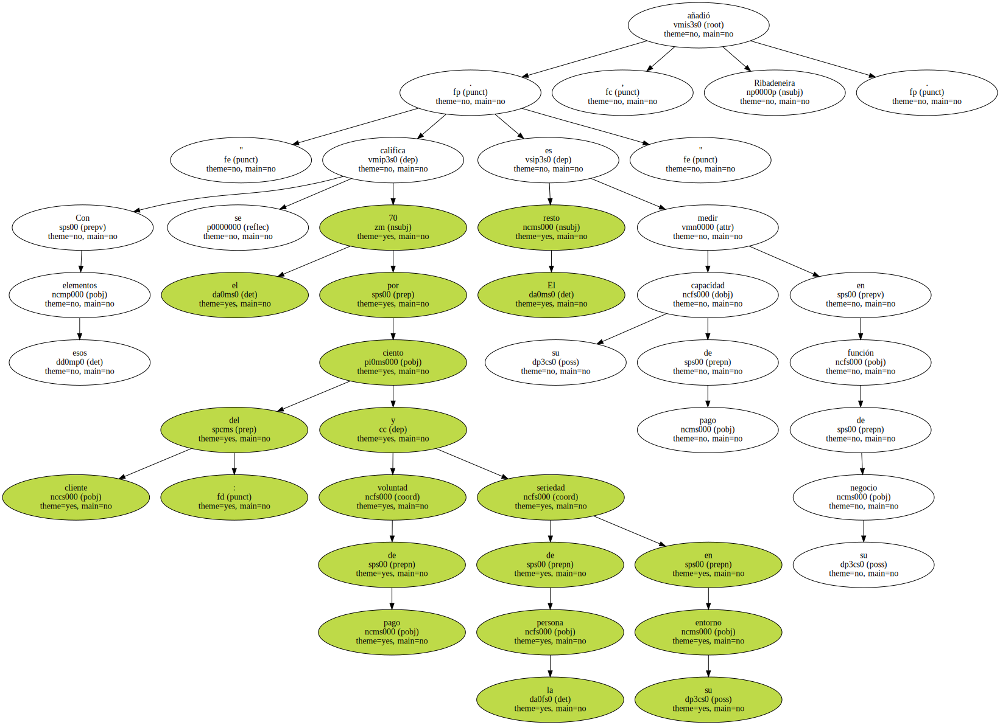El directivo de la entidad financiera aseguró , además , que esta labor ya se desarrolla en las ciudades de Quito , Guayaquil , Riobamba , Ambato , Otavalo y próximamente se iniciará en Ibarra.

El Banco Solidario tiene un patrimonio de 10,5 millones de dólares y una capacidad de crédito mensual de 1,5 millones de dólares en el proyecto para pequeños créditos.
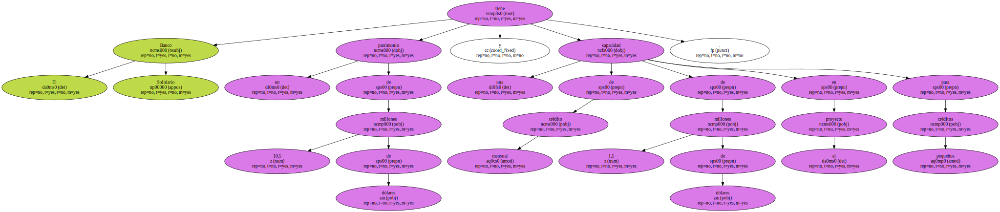